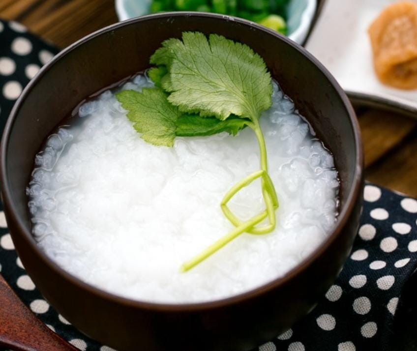
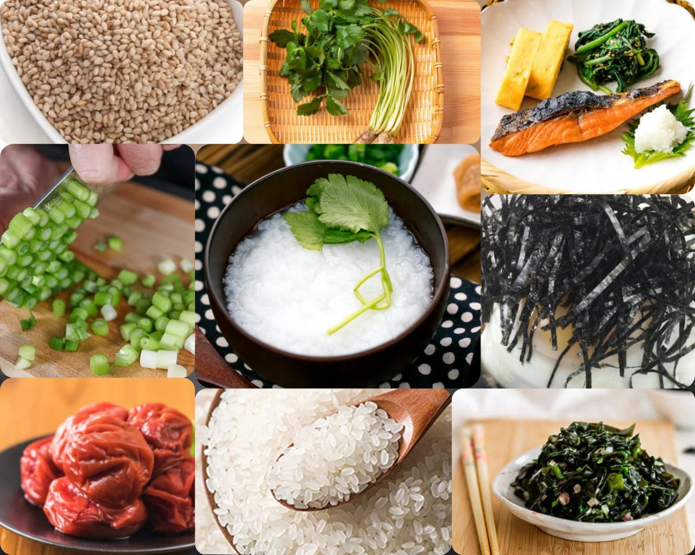

Okayu
Home
Rice Porridge, or we call it Okayu (お粥), is a simple dish made with rice and water. The rice is simmered in a pot with water until the mixture disintegrates. As the rice is tender soft and easily digestible, it is known as a healing food in Japan. We usually serve Okayu to people who are recovering from sickness, the elderly, or babies. For those of you who are familiar with Chinese foods, you'd probably know that rice porridge (or congee) is very much enjoyed in many different ways. Some versions come with protein and assorted ingredients, and they are perfect for lunch or dinner.

Ingredients
¼ cup uncooked Japanese short-grain rice
250 ml water
chopped scallions
umeboshi
toasted white sesame seeds
kizami nori
Japanese Salted Salmon
mitsuba

Nutrition Facts
Energy 204
Total Fat 3.9g
Cholestero 9mg
Sodium 145mg
Total Carbohydrate 34.23g
Vitamin C 3%
vitamin A 2%
Procedure
Gather all the ingredients. I follow the 1 to 5 rice-to-water ratio for my Okayu recipe.
Rinse the rice in water, then drain. Repeat until the water runs clear.
Soak the rice in the pot for at least 30 minutes.
After 30 minutes, drain the water completely.
Then add 250 ml of water into the pot.
Cover the pot and bring to a boil over high heat.
When boiling, lower the heat to the stove’s lowest setting (make sure to use the right size of stove burner for your pot size). Open the lid and gently mix with the spoon once, making sure rice is not stuck to the bottom of the pot.
Cover the lid and simmer the rice for 30 minutes. During this time, I never open the lid or mix the rice.
After 30 minutes, turn off the heat and let it steam for 10 minutes. The rice should be soft and thickened. If you want to add something, like a beaten egg or salt, this is the time to add. I keep this recipe plain and simple. Serve into the individual rice bowls and garnish and put toppings of your choice.
Expert Guide
Back ←
Scroll to Top ↑